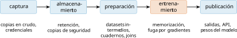
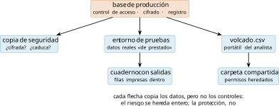
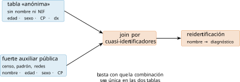
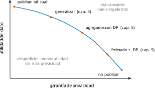

El dato personal como objeto de ingeniería
Una tabla con edad, sexo y código postal parece inocente: no hay nombres, no hay números de documento, no hay nada que un lector humano reconozca como «identificativo». Y sin embargo, con esas tres columnas basta para señalar de forma única a la mayoría de la población de un país. La intuición de que «sin el nombre ya es anónimo» es la primera que este libro necesita desmontar, y conviene hacerlo con números y no con opiniones: esa intuición rota es la causa de la mayor parte de las fugas de privacidad documentadas en ciencia de datos.
Este capítulo define el objeto del libro desde la técnica, no desde el derecho: qué convierte un campo en identificador, un conjunto de campos en huella, y un pipeline en tratamiento de datos personales. El derecho aparecerá enseguida —el RGPD nombra y clasifica— pero como requisito de ingeniería, no como trámite. El plan es sencillo: primero clasificamos las columnas por el papel que juegan en una reidentificación (sección 1.1) y aprendemos a contar la información que llevan; después leemos el artículo 9 del RGPD como lo que es para nosotros, una anotación de esquema (sección 1.2); seguimos el dato por las cinco estaciones de un proyecto real (sección 1.3); y terminamos dibujando el mapa de los canales por los que ese dato se escapa (sección 1.4), que es también el mapa de este libro.
Una nota sobre el método antes de empezar, porque marcará los diecisiete capítulos: cada idea entra primero por la intuición y un ejemplo, y justo después se formaliza. La formalización no es adorno: es lo que permite medir, y sin medida no hay decisión de diseño defendible —ni ante un revisor técnico ni ante una autoridad de control—. El lector con prisa puede saltarse las demostraciones; no debería saltarse nunca los números.
Identificadores, cuasi-identificadores y atributos sensibles
Pensemos en cada columna de una tabla según el papel que puede jugar para un adversario que intenta averiguar a quién corresponde cada fila. Un identificador directo señala por sí solo: el NIF, el correo electrónico, el número de historia clínica. Un atributo sensible es lo que el adversario quiere aprender: un diagnóstico, una afiliación, una orientación. Y entre ambos queda la categoría interesante, la que sostiene medio libro: columnas que no identifican por separado pero sí en combinación.
El propio reglamento apunta en esta dirección si se lee con ojos de ingeniería. El artículo 4.1 del RGPD (Reglamento (UE) 2016/679, General de Protección de Datos (RGPD) 2016) llama dato personal a toda información sobre una persona «identificada o identificable», y su considerando 26 precisa que identificable es aquella persona que puede señalarse «por todos los medios que razonablemente pueda utilizar» un actor. Eso no es una definición jurídica abstracta: es un modelo de adversario. Decidir si una tabla contiene datos personales exige postular quién ataca, con qué información auxiliar y a qué coste —exactamente la pregunta con la que la criptografía define sus garantías—. La respuesta, por tanto, no es una propiedad intrínseca del fichero: cambia cuando cambia el mundo alrededor (un censo publicado, una brecha ajena, una red social nueva).
Para hablar con precisión necesitamos dos definiciones. La primera agrupa las filas que un adversario no puede distinguir entre sí; la segunda da nombre a los conjuntos de columnas que hacen ese grupo peligrosamente pequeño.
Sea \(T\) una tabla y \(Q\) un conjunto de sus atributos. La clase de equivalencia de una fila \(x\) respecto de \(Q\) es el conjunto de filas de \(T\) que comparten con \(x\) todos los valores de \(Q\): \([x]_Q = \{\, y \in T : \pi_Q(y) = \pi_Q(x) \,\}\). Su cardinal \(\lvert [x]_Q \rvert\) mide cuántas filas se «esconden» juntas.
Sea \(T\) una tabla con atributos \(A_1,\dots,A_m\) sobre una población \(P\). Un subconjunto \(Q \subseteq \{A_1,\dots,A_m\}\) es un cuasi-identificador si la fracción de individuos de \(P\) cuya clase de equivalencia en la población tiene cardinal uno, \[u_P(Q) \;=\; \Pr_{x \sim P}\bigl[\,\lvert [x]_Q \rvert = 1\,\bigr],\] no es despreciable. La unicidad se mide contra la población, no contra la muestra: una fila única en la tabla puede no serlo en el censo.
La tabla 1.1 lo hace tangible con ocho filas de un hospital imaginario del que ya se han suprimido los identificadores directos. Sobre el conjunto \(Q=\{\)edad, sexo, CP\(\}\) quedan cinco clases de equivalencia, y la lectura de cada una enseña algo distinto.
| fila | edad | sexo | CP | diagnóstico | \(\lvert[x]_Q\rvert\) |
|---|---|---|---|---|---|
| 1 | 34 | F | 46021 | asma | 2 |
| 2 | 34 | F | 46021 | hipertensión | 2 |
| 3 | 34 | M | 46021 | diabetes | 1 |
| 4 | 51 | M | 03202 | asma | 3 |
| 5 | 51 | M | 03202 | asma | 3 |
| 6 | 51 | M | 03202 | asma | 3 |
| 7 | 78 | F | 44001 | ansiedad | 1 |
| 8 | 62 | M | 28010 | dermatitis | 1 |
Las filas 3, 7 y 8 son únicas: cualquiera que sepa que su vecino de 62 años del 28010 está en la tabla acaba de conocer su diagnóstico. Las filas 4–6 forman una clase de tamaño tres, que parece refugio hasta que se mira la última columna: las tres comparten diagnóstico, de modo que el adversario no sabe cuál de las tres filas es su objetivo pero sí sabe que tiene asma —revelación de atributo sin reidentificación—. Solo la clase \(\{1,2\}\) protege de verdad: dos filas, dos diagnósticos distintos. Con ocho filas acabamos de encontrarnos, sin nombrarlas, las tres métricas del capítulo 3 (\(k\)-anonimato, \(l\)-diversidad y su refinamiento): las definiciones formales pueden esperar; las ideas ya están todas aquí.
El resultado clásico de Sweeney: el 87 % de la población de EE. UU. queda determinada de forma única por la terna \(\{\)código postal, fecha de nacimiento completa, sexo\(\}\) (Sweeney 2002). Con esa terna, Sweeney reidentificó el historial médico del gobernador de Massachusetts en un dataset hospitalario «anónimo» cruzándolo con el censo electoral, que costaba veinte dólares. Dos décadas después el resultado se generaliza: con 15 atributos demográficos, el 99,98 % de los estadounidenses es reidentificable incluso en muestras incompletas (Rocher et al. 2019).
La consecuencia operativa se escribe en tres listas, y conviene mantenerlas explícitas en el código desde el primer día:
# se separan las columnas por su papel frente a la reidentificacion
IDENTIFICADORES = ["nif", "email", "num_historia"]
CUASI = ["edad", "sexo", "codigo_postal", "profesion"]
SENSIBLES = ["diagnostico"]Un aviso antes de seguir: el papel de una columna depende del contexto, no de su nombre. La fecha de ingreso es inocua en un censo nacional y cuasi-identificadora en un hospital comarcal; y en el caso del premio Netflix, las columnas que reidentificaron a los usuarios no fueron demográficas, sino las películas puntuadas y sus fechas, cruzadas con los perfiles públicos de IMDb (Narayanan y Shmatikov 2008). Cualquier columna con suficiente variedad, observable por un tercero, puede ejercer de cuasi-identificador. Las tres listas del listado anterior no son una clasificación eterna: son una hipótesis de adversario que se revisa cuando el contexto cambia.
La aritmética de la identificación
¿Cuánta identificación cabe en una columna? La pregunta tiene respuesta exacta, y da una intuición que vale más que cualquier lista de columnas prohibidas. La herramienta es la entropía de Shannon: para una variable \(X\) que toma valores con probabilidades \(p_1,\dots,p_n\), \[H(X) \;=\; -\sum_{i=1}^{n} p_i \log_2 p_i \quad \text{bits},\] que mide la información media que revela observar \(X\). Si las componentes de un cuasi-identificador \(Q=\{X_1,\dots,X_q\}\) fueran independientes, la información conjunta sería la suma \(H(X_1)+\cdots+H(X_q)\); con dependencias (el código postal predice en parte la profesión) la conjunta es menor, así que la suma es una cota superior.
La fórmula se estrena bien en la tabla de juguete 1.1, donde todo se puede comprobar con lápiz. El sexo reparte tres F y cinco M: \[H(\text{sexo}) = -\tfrac{3}{8}\log_2\tfrac{3}{8} -\tfrac{5}{8}\log_2\tfrac{5}{8} \approx 0{,}95 \text{ bits},\] casi el bit entero de una moneda justa. La edad toma los valores \(\{34,51\}\) tres veces cada uno y \(\{78,62\}\) una vez: \(H(\text{edad}) = 2\cdot\frac{3}{8}\log_2\frac{8}{3} + 2\cdot\frac{1}{8}\log_2 8 \approx 1{,}81\) bits, y el CP, con el mismo patrón, otros 1,81. La suma ronda \(4{,}6\) bits frente a los \(\log_2 8 = 3\) que costaría señalar una fila cualquiera: sobra información, y por eso la tabla tiene tres filas únicas y ninguna clase grande. La cuenta de tres líneas ya predice la forma de la última columna de la tabla.
Para señalar de forma única a una persona entre \(N\) hacen falta \(\log_2 N\) bits. España tiene 49,1 millones de habitantes según las cifras oficiales a 1 de enero de 2025 (Instituto Nacional de Estadística 2025): \(\log_2(49{,}1\cdot 10^6) \approx 25{,}5\) bits. La cuenta de la vieja resulta entonces reveladora. El sexo aporta 1 bit. La edad en años, como mucho \(\log_2 100 \approx 6{,}6\). La fecha de nacimiento completa, en cambio, unos \(\log_2(365 \cdot 80) \approx 14{,}8\); y un código postal, hasta \(\log_2 11\,752 \approx 13{,}5\). Por eso la terna de Sweeney (fecha completa + CP + sexo \(\approx 29\) bits) sobra para EE. UU. y sobraría para España, mientras que sustituir la fecha de nacimiento por la edad en años deja la suma en torno a 21 bits y ya no alcanza, en media, para señalar a todo el mundo. Reducir resolución —edad en vez de fecha, provincia en vez de CP— es literalmente restar bits al adversario; el capítulo 4 convertirá esta idea en las jerarquías de generalización.
Dos matices para no abusar de la cuenta. Primero, la entropía es un promedio: aunque la suma no llegue a \(\log_2 N\), las personas de combinaciones raras (99 años, profesión infrecuente, CP rural) quedan únicas mucho antes que la media —la privacidad se pierde primero en las colas—. Segundo, la suma ignora las correlaciones entre columnas y la estructura real de la población; estimar bien la unicidad poblacional exige modelos generativos ajustados, que es exactamente lo que hace Rocher et al. (2019) y lo que implementaremos en el capítulo 3.
Cuando las columnas se hablan
El segundo matiz merece su propia fórmula, porque cuantifica algo que usaremos sin parar: cuánto se solapan dos columnas. La información mutua de \(X\) e \(Y\) es \[I(X;Y) \;=\; H(X) + H(Y) - H(X,Y) \;\geq\; 0,\] los bits que las dos columnas cuentan por duplicado. Si son independientes, \(H(X,Y)=H(X)+H(Y)\) y el solapamiento es cero; cuanto más se predicen mutuamente, más bits comparten y menos suma la pareja para el adversario.
Un ejemplo se calcula a mano. Supongamos dos códigos postales y dos profesiones con esta distribución conjunta (cada celda, la fracción de la población):
| sanidad | otras | |
|---|---|---|
| 46021 | 0,40 | 0,10 |
| 03202 | 0,10 | 0,40 |
Las marginales son uniformes, así que \(H(\text{CP}) = H(\text{profesión}) = 1\) bit cada una. La conjunta, en cambio, \[H(\text{CP},\text{prof}) = -2\cdot 0{,}4\log_2 0{,}4 - 2\cdot 0{,}1\log_2 0{,}1 \approx 1{,}72 \text{ bits},\] no llega a 2: la pareja se solapa \(I = 1 + 1 - 1{,}72 = 0{,}28\) bits. Quien conoce el CP ya sabe algo de la profesión, y sumar ambas columnas aporta al adversario menos de lo que la cota aditiva promete. Esta es la razón exacta por la que la suma de la sección 1.1.1 es cota superior y no igualdad.
¿Y por qué el script del libro no mide directamente la entropía conjunta «de verdad» y a correr? Porque no puede: la conjunta empírica está acotada por \(\log_2 n\) —con 20 000 filas, 14,29 bits— y nuestro cuasi-identificador ronda los 23. Una muestra no contiene información suficiente para estimar la entropía de un espacio mayor que ella misma; el estimador empírico la subestima sistemáticamente. Es el mismo fenómeno de la proposición [prop:muestra] vestido de teoría de la información, y la razón por la que el capítulo 3 necesitará modelos y no solo conteos.
Dos propiedades de la información mutua trabajarán para nosotros todo el libro y conviene dejarlas enunciadas. La regla de la cadena, \(H(X,Y) = H(X) + H(Y \mid X)\), dice que la información conjunta se puede contar por etapas: lo que aporta \(Y\) una vez conocido \(X\) es exactamente \(H(Y \mid X) = H(Y) - I(X;Y)\), que es como el adversario suma columnas de verdad —descontando solapamientos—. Y la desigualdad de procesado de datos: si \(Z\) se calcula solo a partir de \(Y\) (una cadena \(X \to Y \to Z\)), entonces \(I(X;Z) \leq I(X;Y)\). Procesar no crea información sobre \(X\): ninguna transformación posterior de una salida puede saber del secreto más que la salida misma. Cuando en el capítulo 5 se afirme que la privacidad diferencial es inmune al post-procesado —que ningún análisis posterior puede degradar su garantía—, será esta desigualdad hablando.
Única en la muestra no es única en la población
La definición [def:cuasi] midió la unicidad contra la población. Casi siempre, sin embargo, lo que tenemos delante es una muestra: los 20 000 pacientes de un estudio, no los 49 millones del país. La relación entre ambas unicidades tiene una dirección fácil y una trampa.
Sea \(S \subseteq P\) una muestra y \(x \in S\). Si \(\pi_Q(x)\) es única en \(P\), entonces es única en \(S\). El recíproco es falso en general.
Demostración. Proof. Si no hubiera en \(P\) ningún otro individuo con la misma proyección, tampoco puede haberlo en \(S \subseteq P\). Para el recíproco basta un contraejemplo: dos gemelos estadísticos en \(P\) de los que solo uno cae en la muestra dejan una fila única en \(S\) que no lo es en \(P\). ◻
En consecuencia, la unicidad medida sobre la muestra sobreestima la poblacional: toda fila única en la población que entre en la muestra seguirá siendo única, y a ellas se suman los falsos únicos cuyo gemelo quedó fuera. El dataset sintético de este libro —calibrado con las marginales reales del INE: la pirámide de edad y sexo de 2025 y el código postal con su prefijo provincial verdadero (Instituto Nacional de Estadística 2025)— lo exhibe con números medidos: sus cuatro cuasi-identificadores suman \(H \approx 23{,}2\) bits —por debajo de los 25,5 que exige España, luego en media no bastan para señalar de forma única a la población entera— y aun así el 99,5 % de las 20 000 filas de la muestra son únicas, porque \(\log_2 20\,000 \approx 14{,}3\) bits son muchos menos que 23,2. Una tabla puede ser un colador dentro de sí misma y decir poco sobre el riesgo poblacional: distinguir ambas cosas es la diferencia entre medir y asustarse, y ocupará el capítulo 3.
¿Cuántos gemelos estadísticos tiene usted?
La proposición anterior habló de «gemelos estadísticos»: personas que comparten con usted todos los valores del cuasi-identificador. La pregunta de cuántos tiene admite un modelo sencillo, y el modelo, una validación empírica contra nuestro dataset. Es el primer ciclo completo intuición–fórmula–medida del libro, y merece verse despacio.
Fije su propia combinación \(q\) (su edad, su sexo, su código postal, su profesión) y llame \(p_q\) a la probabilidad de que una persona tomada al azar la comparta. Entre los otros \(N-1\) habitantes, el número \(K\) de gemelos sigue una binomial de \(N-1\) intentos con probabilidad \(p_q\); cuando \(N\) es grande y \(p_q\) pequeña, \(K\) se aproxima por una Poisson de media \(\lambda = N p_q\), y por tanto \[\Pr[\text{ser único}] \;=\; \Pr[K = 0] \;\approx\; e^{-\lambda} \;=\; e^{-N p_q}.\] Todo el riesgo de unicidad está comprimido en un solo número, \(\lambda\): el número esperado de gemelos. Si \(\lambda\) es grande, usted desaparece entre ellos; si \(\lambda\) cae por debajo de 1, la unicidad es lo esperable.
¿Cómo de buena es la aproximación de Poisson? Cuantificablemente buena: la cota de Le Cam acota la distancia en variación total entre la binomial exacta y su Poisson límite por \[d_{TV}\bigl(\mathrm{Bin}(N-1,p_q),\ \mathrm{Poi}(\lambda)\bigr) \;\leq\; (N-1)\,p_q^2 \;=\; \lambda\,p_q,\] que con \(N \sim 10^7\) y \(p_q \sim 10^{-8}\) es del orden de \(10^{-9}\): el error del modelo es despreciable frente al error con que conocemos \(p_q\). La aproximación no es el eslabón débil; la estimación de \(p_q\), sí —y por eso el capítulo 3 dedica su esfuerzo a modelarla y no a refinar la distribución—. Saber dónde está la incertidumbre de un análisis vale tanto como el análisis.
Para una cuenta mental rápida sirve el modelo de soporte efectivo: tratar la combinación como uniforme sobre \(2^{H}\) valores, con \(H\) la entropía conjunta, de modo que \(p_q \approx 2^{-H}\) y \(\lambda \approx N/2^{H}\). Con la terna de Sweeney en España (\(H \approx 29{,}3\)): \(\lambda \approx 48{,}6\cdot10^6 / 2^{29{,}3} \approx 0{,}07\), es decir \(e^{-0{,}07} \approx 0{,}93\): un 93 % de únicos —la versión española del 87 % del ejemplo [ej:sweeney]—. Con la edad en lugar de la fecha (\(H \approx 21{,}1\)): \(\lambda \approx 22\) gemelos esperados, y la unicidad media se desploma a \(e^{-22} \approx 10^{-10}\): nadie. La misma tabla pasa de colador a refugio quitando ocho bits. Pero el promedio no es la distribución: la persona de 99 años en un CP rural tiene su \(\lambda\) particular próximo a cero y sigue única, con fórmula y todo. Las garantías de este libro tendrán que valer para ella, no para la media.
El mismo aparato responde una pregunta hermana: ¿cuántas filas hacen falta para que una tabla empiece a chocar consigo misma? Es la paradoja del cumpleaños con otro disfraz. Entre \(n\) filas hay \(\binom{n}{2}\) parejas, y cada pareja coincide con probabilidad \(\approx 2^{-H}\), así que el número esperado de pares de gemelos internos es \(\binom{n}{2} 2^{-H}\); la primera colisión se espera en torno a \(n \approx 2^{H/2}\), la raíz cuadrada del soporte, muchísimo antes de agotarlo. En nuestro dataset (\(H \approx 23{,}2\), soporte efectivo \(\approx 9{,}7\) millones): primera colisión esperada hacia las 3 100 filas, y con \(n = 20\,000\) unos \(\binom{20\,000}{2}/(9{,}7\cdot 10^6) \approx 21\) pares. La medida real da 55, más del doble, y la discrepancia es instructiva: el soporte efectivo supone uniformidad, y la población real concentra su masa en las combinaciones frecuentes —cuarentones de Madrid, no centenarios de Soria—, donde las colisiones se fabrican más deprisa. El modelo uniforme acota el orden de magnitud; la distribución manda en el factor. La moraleja corta sobrevive intacta: para que todas las filas tengan gemelo hace falta \(n\) comparable a \(2^{H}\); para que alguna lo tenga basta \(2^{H/2}\). La protección de la multitud llega mucho más tarde de lo que la intuición promete.
La tabla 1.2 aplica la cuenta a tres cuasi-identificadores sobre la población española. La lectura por filas es el oficio entero de la Parte I en miniatura: la primera combinación expone a casi todos; la segunda protege en media pero no en las colas; la tercera da a cada persona cientos de miles de gemelos y hace de la unicidad una rareza. Entre la primera fila y la tercera solo hay decisiones de resolución —las de la tabla 1.4 que veremos en la sección 1.3—.
| Cuasi-identificador | \(H\) (bits) | \(\lambda = N/2^{H}\) | \(e^{-\lambda}\) |
|---|---|---|---|
| fecha nac. + CP + sexo | \(\approx 29{,}3\) | \(0{,}07\) | \(\approx\) 93 % únicos |
| edad + CP + sexo | \(\approx 21{,}1\) | \(\approx 22\) | \(\approx 10^{-10}\) |
| edad + provincia + sexo | \(\approx 13{,}3\) | \(\approx 4\,900\) | \(\approx 0\) |
El modelo se deja comprobar. El script codigo/cap01/entropia_cuasi.py estima \(p_q\) fila a fila como producto de frecuencias marginales (la hipótesis de independencia de la sección 1.1.1) y calcula la unicidad esperada \(\overline{(1-p_q)^{N-1}}\). Sobre el dataset del libro predice un 99,4 % de filas únicas; la medida directa da 99,5 %. El acierto no es casualidad ni mérito: el dataset se generó con columnas independientes, así que la hipótesis del modelo es cierta por construcción. Sobre datos reales las correlaciones la rompen, y el error del modelo —que ya sabemos medir— se convierte él mismo en información: cuánta estructura tiene la población que un atacante podría explotar. Retomaremos esa idea con los modelos generativos del capítulo 3.
Las categorías especiales del artículo 9 RGPD, vistas desde el dato
El RGPD reserva un régimen reforzado para las «categorías especiales» de su artículo 9: origen étnico o racial, opiniones políticas, convicciones religiosas o filosóficas, afiliación sindical, datos genéticos, datos biométricos dirigidos a identificar de manera unívoca, salud, y vida u orientación sexual (Reglamento (UE) 2016/679, General de Protección de Datos (RGPD) 2016). Leído desde la ingeniería, el artículo 9 es una anotación de esquema: marca columnas cuyo tratamiento exige base jurídica reforzada y medidas técnicas a la altura. La tabla 1.3 recorre cómo aparecen esas categorías en un proyecto de datos real —y por qué vía entran sin que el esquema las nombre.
| Categoría (art. 9) | Forma típica en el dato | Vía de entrada no obvia |
|---|---|---|
| salud | diagnósticos, EHR, imagen médica | apps de hábitos, compras, bajas laborales |
| biometría | plantilla facial, huella, voz | cualquier foto o audio del que se extraiga una plantilla |
| genética | VCF, paneles, parentesco | el dato de un familiar informa del resto |
| origen étnico | campo explícito (raro) | proxies: nombre, lengua, barrio |
| ideología, religión, sindicato | afiliaciones declaradas | historial de navegación, «me gusta», donaciones |
| vida u orientación sexual | campo explícito (raro) | apps, grafo social, patrones de consumo |
Tres de esas filas merecen detenerse, porque fijan patrones que reaparecerán en la Parte III.
La salud se infiere de lo inocuo. El caso escolar es el de la cadena Target: un modelo de propensión entrenado sobre tickets de compra —loción sin perfume, suplementos de magnesio— asignaba a cada clienta una «puntuación de embarazo», y el envío de cupones de bebé destapó ante su familia el embarazo de una adolescente que no lo había contado (Duhigg 2012). Nada en el esquema decía «salud»; la categoría especial la creó el modelo. La lección de ingeniería: la clasificación del artículo 9 se aplica a lo que el sistema sabe, no a lo que las columnas dicen.
La genética identifica en familia. Un perfil genético no es un dato individual: se comparte a medias con cada familiar de primer grado, a cuartos con los de segundo, y así en progresión geométrica. Erlich et al. (2018) cuantificaron la consecuencia: con apenas un 2 % de una población en bases genealógicas abiertas, cerca del 60 % de las búsquedas encuentra un primo tercero o más cercano, suficiente para triangular la identidad —la técnica que resolvió el caso del Golden State Killer en 2018—. Usted puede no haber enviado nunca su ADN a ningún sitio: basta con que lo hicieran sus primos. Es el ejemplo extremo de una regla general: el perímetro de un dato personal no coincide con la persona que lo aportó.
La biometría no se puede revocar. Una contraseña filtrada se cambia; una plantilla facial filtrada, no: la cara es la misma para siempre. Por eso el artículo 9 la marca solo cuando el fin es identificar «de manera unívoca», y por eso su protección técnica —plantillas canceladas, revocabilidad— es un problema propio, con capítulo entero (el 11) y con ataques de reconstrucción recientes que obligan a matizar lo que «irreversible» significa.
Los proxies, o la columna que no está. La cuarta lección es la más incómoda porque no se arregla borrando nada. Decimos que una columna \(X\) es proxy de una sensible \(S\) cuando \(I(X;S) > 0\): la información mutua de la sección 1.1.2 reaparece aquí como medida de cuánto sabe de lo prohibido una columna aparentemente neutra. El código postal es el ejemplo canónico —la historia del redlining es exactamente eso: denegar créditos por barrio como proxy de origen—, y la consecuencia práctica es doble. Primero, eliminar la columna sensible no elimina la capacidad del sistema de discriminar por ella si sus proxies siguen dentro: un modelo al que se le oculta \(S\) pero se le dan columnas con \(I(X;S)\) alta la reconstruye solo. Segundo, la respuesta no puede ser borrar todo proxy —todo correlaciona con todo— sino medir: anotar en el esquema qué columnas llevan información de categorías especiales y cuánta, y decidir con el número delante. Es el mismo gesto de todo el capítulo, y volverá con las métricas de equidad del AI Act en el capítulo 15.
Junto a las categorías, el vocabulario. El artículo 4.5 define la seudonimización: sustituir los identificadores por claves de forma que atribuir el dato a una persona exija información adicional guardada aparte. Es una medida de seguridad excelente y una anonimización nula: el dato seudonimizado sigue siendo personal a todos los efectos, porque la tabla de correspondencia existe y porque los cuasi-identificadores siguen ahí (definición [def:cuasi]). Confundir ambas cosas —«hemos quitado el NIF, ya es anónimo»— es el malentendido más caro de esta disciplina, y la AEPD dedica sus orientaciones a deshacerlo (Agencia Española de Protección de Datos 2022b, 2022a).
El perímetro, además, ya no termina en el dataset. El EDPB exige evaluar caso por caso si un modelo entrenado con datos personales puede considerarse anónimo: solo lo es si la probabilidad de identificación «por todos los medios razonablemente probables» resulta insignificante, también a partir de sus parámetros (European Data Protection Board 2024). Dicho en términos de esta sección: los pesos de un modelo son una columna más del esquema, con el papel —identificante, sensible o ambos— que le otorguen los ataques del capítulo 2. Hasta que no se demuestre lo contrario, un modelo hereda la clasificación de los datos que lo entrenaron.
La regla operativa con la que este libro cierra la sección es deliberadamente simple: si un modelo predice una categoría especial mejor que el azar, sus salidas se anotan y protegen como categoría especial. No importa que la predicción sea imperfecta —también lo era la puntuación de Target— ni que el uso previsto sea otro: la capacidad de inferencia es el dato. Para gobernar ese perímetro completo existen marcos operativos: las orientaciones de la AEPD ya citadas y el marco de desidentificación de ISO/IEC 27559, que organiza el riesgo a lo largo de todo el ciclo de vida (ISO/IEC 27559 2022) —justo el ciclo que toca recorrer ahora.
Ciclo de vida del dato en un proyecto de ciencia de datos
La figura 1.1 recorre las cinco estaciones por las que pasa el dato en un proyecto típico. La observación central es que la privacidad no es una propiedad de una estación, sino del recorrido: un dato minimizado en la captura puede volver a ser identificante tras un join en la preparación, y un modelo puede memorizar en el entrenamiento lo que la publicación creía haber agregado.

En la captura se decide, para siempre, cuánta información entra. El principio de minimización del artículo 5.1.c (Reglamento (UE) 2016/679, General de Protección de Datos (RGPD) 2016) tiene aquí su traducción exacta en bits: cada campo del formulario que no se necesita es entropía regalada al adversario de la sección 1.1.1. La tabla 1.4 pone tres decisiones de formulario en esa moneda. Pedir la edad en vez de la fecha de nacimiento no es cosmética: son ocho bits menos, para siempre, en todas las copias posteriores; y la franja etaria, cuando el análisis la tolere, deja el campo en tres.
| Campo pedido | Bits (máx.) | Alternativa mínima | Bits |
|---|---|---|---|
| fecha de nacimiento | 14,8 | edad en años / franja etaria | 6,6 / 3,0 |
| código postal | 13,5 | provincia | 5,7 |
| teléfono completo | (identificador) | ¿hace falta siquiera? | 0 |
En el almacenamiento el dato se multiplica, y la figura 1.2 muestra en qué se convierte esa multiplicación: un árbol de copias donde cada flecha reproduce los datos pero no los controles. La base de producción tiene control de acceso, cifrado y registro; el volcado de hace tres meses en el portátil de un analista no tiene nada de eso, y el cuaderno que imprimió veinte filas «para mirar» las llevará dentro mientras exista. La retención es la otra decisión silenciosa: el dato que ya no existe es el único que no puede fugarse, y «lo guardamos por si acaso» es una política de retención, solo que mala.

La preparación es la estación más traicionera, porque es donde el equipo se siente seguro: «ya está anonimizado». La figura 1.3 muestra el mecanismo por el que deja de estarlo: un join con una fuente auxiliar por las columnas compartidas —los cuasi-identificadores— reidentifica todas las filas cuya combinación sea única en ambas tablas, que como vimos son casi todas. Y el join peligroso no requiere mala fe: llega solo, cuando alguien enriquece el dataset con «datos abiertos del ayuntamiento» y sube sin querer la entropía conjunta de la tabla. Por eso la revisión del esquema anotado tras cada cruce no es burocracia: es donde se decide si la tabla cambió de naturaleza.
Mención aparte merece el cuaderno de análisis, que es un fichero con una propiedad traicionera: guarda las salidas junto al código. Cada df.head() ejecutado deja filas reales incrustadas en el JSON del cuaderno, que luego viaja por el control de versiones, las copias y los adjuntos de correo con esas filas dentro. La higiene es conocida y este libro la adopta: los cuadernos se versionan sin salidas, y toda cifra o muestra que merezca conservarse se produce por script con su artefacto de verificación —las quince observaciones de rigor— en un fichero declarado, no en una celda olvidada.

En el entrenamiento el dato cambia de forma: deja de ser filas y pasa a ser gradientes y pesos. El error clásico es creer que ese cambio de forma es una anonimización. No lo es: los modelos memorizan parte de sus datos de entrenamiento, y lo hacen más justamente donde más duele —los ejemplos raros y los repetidos, es decir, las colas de la sección 1.1.1 y los datos de quien aparece muchas veces—. La memorización no es un fallo exótico sino el comportamiento por defecto de un modelo sobreparametrizado ante un ejemplo atípico: le sale más barato aprendérselo que generalizarlo (Carlini et al. 2021). El capítulo 2 demostrará con código cuánto y cómo extraerlo; los capítulos 6 y 9, cómo entrenar poniéndoselo caro.
En la publicación, por fin, el proyecto emite: tablas agregadas, una API de predicción, los propios pesos. Todo lo emitido es irrevocable —no hay «derecho de supresión» sobre lo ya copiado— y hasta el agregado más inocente resta. El ataque de diferencias lo enseña con una cuenta de una línea: si hoy se publica el salario medio \(m_1\) de los \(n\) empleados y mañana, tras una baja, el medio \(m_2\) de los \(n-1\) restantes, el salario del que se fue queda expuesto exactamente: \[s \;=\; n\,m_1 - (n-1)\,m_2,\] sin que ninguna de las dos publicaciones contuviera una sola fila. Dos agregados legítimos, una resta, un dato personal. Generalizar esa resta a cualquier par de consultas es la idea que motiva la privacidad diferencial del capítulo 5; por eso esta estación concentra las garantías formales de la Parte II: lo que salga debe llevar la privacidad puesta, no prometida.
La disciplina transversal que este libro adopta es que el esquema anotado viaja con el dato: una declaración explícita del papel de cada columna que acompaña al dataset por las cinco estaciones, se valida al crear la tabla y se revisa en cada join. El módulo comun/esquema.py la implementa y el generador del dataset la usa:
ESQUEMA = {
"num_historia": "identificador", # se suprime al preparar
"edad": "cuasi",
"sexo": "cuasi",
"codigo_postal": "cuasi",
"profesion": "cuasi",
"diagnostico": "sensible", # art. 9: salud
}
validar(df, ESQUEMA) # aborta si hay columnas sin papel
CUASI = columnas(ESQUEMA, "cuasi")La función validar es deliberadamente intransigente: una columna sin papel declarado detiene el pipeline, porque una columna sin papel es un riesgo sin evaluar. Es la versión de datos del principio que en tipado estático se llama «hacer ilegales los estados inválidos»: que el camino fácil sea el seguro.
Cerrando la sección, el resumen operativo del ciclo de vida cabe en tres preguntas que haremos, estación por estación, en cada proyecto del libro: ¿qué entra? (en bits: tabla 1.4); ¿quién copia? (el árbol: figura 1.2); ¿qué sale? (los canales de la sección siguiente). Quien pueda responder las tres con números tiene hecha media evaluación de impacto; la otra media —probabilidad y severidad— llegará con las métricas del capítulo 3 y el molde de la EIPD del capítulo 14.
Superficie de exposición de un pipeline típico
Con el ciclo de vida delante, el último paso del capítulo es sistemático: enumerar por dónde sale el dato de cada estación. La tabla 1.5 lo hace, y de paso dibuja el mapa del libro: cada canal apunta al capítulo que lo mide y al que lo mitiga.
| Estación | Canal de fuga | Ataque tipo | Caps. |
|---|---|---|---|
| captura | campos de más, credenciales | ingeniería social | 14, 16 |
| almacenamiento | copias, retención, accesos | brecha, insider | 14, 16 |
| preparación | joins, intermedios, cuadernos | linkage | 2, 3, 4 |
| entrenamiento | memorización, gradientes | MIA, inversión | 2, 6, 9 |
| publicación | agregados, API, pesos | extracción, reconstr. | 2, 5, 8 |
Conviene fijar desde ya el vocabulario con el que evaluaremos cada canal. Un adversario queda descrito por tres cosas: su conocimiento auxiliar (qué otras fuentes puede cruzar), su acceso (¿ve la tabla entera, solo una API, solo los pesos?) y su objetivo (reidentificar una fila, confirmar una pertenencia, reconstruir un atributo). La tabla 1.6 recorre los perfiles que de verdad aparecen en los incidentes documentados; nótese que el más frecuente no es el atacante de película sino el curioso con acceso legítimo.
| Adversario | Conocimiento auxiliar | Acceso típico | Objetivo |
|---|---|---|---|
| curioso interno | otras tablas de la casa | dataset completo | una persona concreta |
| insider / ex empleado | esquemas, copias antiguas | volcados sin custodia | lucro, represalia |
| corredor de datos | agregadores comerciales | releases públicos | enriquecer perfiles |
| investigador, periodista | fuentes abiertas | release público | demostrar la fuga |
| atacante dirigido | OSINT de la víctima | API del modelo | un individuo, a cualquier coste |
La economía del asunto es asimétrica y conviene decirlo pronto: los ataques históricos fueron baratos. El censo electoral de Sweeney costó veinte dólares (ejemplo [ej:sweeney]); las búsquedas genealógicas de Erlich et al. (2018) usan bases gratuitas; y la extracción de datos de entrenamiento de un modelo comercial que cuantifican Nasr et al. (2023) —gigabytes de texto memorizado, con un ataque de divergencia que multiplicaba por 150 la tasa de emisión de texto literal— costó del orden de doscientos dólares. Defender cuesta más que atacar; razón de más para defender con garantías medibles y no con esperanza.
Sobre esas coordenadas, este libro adopta tres supuestos de trabajo que valdrán salvo aviso explícito en contrario:
El adversario conoce el esquema, el método y los parámetros públicos del sistema (el principio de Kerckhoffs: nada de seguridad por oscuridad).
Dispone de cualquier fuente auxiliar presente o futura: lo publicado hoy se cruzará con lo que se publique mañana.
Su objetivo puede ser cualquiera de los tres: pertenencia, atributo o reconstrucción; una defensa que solo cubre uno no cubre nada.
El supuesto A2 es el más duro y el más realista: es la razón por la que «a día de hoy nadie puede cruzarlo» no es un argumento, y la razón por la que las garantías de la Parte II se formularán sobre todos los conocimientos auxiliares posibles, no sobre los que se nos ocurrieron. En sentido contrario, la evidencia reciente también desinfla alarmas mal calibradas: los ataques de inferencia de pertenencia sobre grandes modelos de lenguaje apenas superan al azar cuando se controla la contaminación temporal de los benchmarks (Duan et al. 2024). Las dos cosas son la misma lección: sin medir, ni el optimismo ni el pánico son defendibles. Medir es lo que haremos a partir del capítulo siguiente.
El primer informe de amenaza
Nada fija un método como aplicarlo, aunque sea en miniatura. Cerremos el capítulo redactando —en tres filas— el informe de amenaza del dataset sintético del libro, imaginando tres maneras de «publicarlo» y preguntando, para cada una, qué adversario de la tabla 1.6 la explota primero y con qué canal.
| Escenario de salida | Riesgo dominante | Adversario primero | Mitigación |
|---|---|---|---|
| publicar la tabla fila a fila | linkage: 99,5 % de filas únicas | corredor de datos | caps. 3, 4 |
| publicar solo agregados por CP | diferencias entre consultas revelan filas | investigador | cap. 5 (DP) |
| servir un modelo de diagnóstico | pertenencia e inversión sobre la API | atacante dirigido | caps. 2, 6 |
La primera fila ya sabemos leerla con este capítulo: unicidad muestral del 99,5 % más el supuesto A2 igual a reidentificación en cuanto exista la fuente auxiliar adecuada. La segunda estrena un fenómeno que aún no hemos formalizado —dos agregados que difieren en una persona cuentan la historia de esa persona— y que motivará la privacidad diferencial. La tercera resume la mitad moderna del problema: el modelo como canal. Tres filas, y el índice del libro entero queda justificado por necesidad, que es como deben justificarse los índices.
La frontera que gobierna el libro
Cada mitigación de la tabla 1.7 cuesta algo. Ese compromiso tiene forma, y conviene dibujarla una vez para reconocerla siempre: la figura 1.4 representa el espacio utilidad–privacidad de cualquier decisión de publicación. Los dos extremos son triviales —publicar tal cual (utilidad máxima, garantía nula) y no publicar (lo contrario)— y todo el oficio de la Parte II consiste en poblar la curva entre ambos: generalizar compra garantía barata al principio; la privacidad diferencial permite elegir el punto con un parámetro continuo (\(\eps\), capítulo 5); el federado con DP paga en complejidad lo que gana en garantía.

Dos lecturas de la figura valen el capítulo. La región superior es inalcanzable: quien prometa más utilidad con más privacidad a la vez está vendiendo humo, porque la información que el analista explota es la misma que el adversario explotaría —no hay bits gratis—. Y la región inferior es evitable: renunciar a utilidad sin ganar garantía (borrar columnas útiles dejando los proxies, por ejemplo) es el error simétrico y más frecuente. Diseñar con privacidad no es moverse hacia abajo: es moverse a lo largo de la frontera, con el punto elegido a conciencia y con números.
Cierra el capítulo una nota de navegación. Las cuatro partes del libro admiten tres rutas: quien hace ciencia de datos a diario puede leer en orden (I \(\to\) II \(\to\) III \(\to\) IV), que es como está pensado; quien llega desde el cumplimiento —DPO, legal, auditoría— sacará más partido saltando de esta Parte I al RGPD operativo y la EIPD (capítulos 14 a 16) y volviendo después a las técnicas de la Parte II con las preguntas ya afiladas; y quien diseña plataformas puede leer este capítulo, el 16 (privacy by design) y el caso integral del 17, usando el resto como referencia. Las tres rutas pasan por aquí: el vocabulario de este capítulo es el peaje común.
Síntesis y puente
Un campo no es identificador por su nombre sino por su distribución, y la identificación se cuenta en bits: reducir resolución es restar información al adversario. La unicidad se mide contra la población —la muestral la sobreestima (proposición [prop:muestra])— y el número esperado de gemelos estadísticos \(\lambda = N p_q\) comprime el riesgo en una sola cantidad validable (sección 1.1.4). El artículo 9 es una anotación de esquema que alcanza a las inferencias, a los familiares y, tras la Opinion 28/2024, a los propios pesos de los modelos. Y la privacidad es una propiedad del recorrido completo del dato, no de una estación: por eso el esquema anotado viaja con la tabla y se revalida en cada cruce. El capítulo 1 deja definido el objeto y el vocabulario del adversario; el siguiente adopta su punto de vista y reproduce, con código, los ataques que convierten estas definiciones en riesgo medible.
Errores comunes
Creer que suprimir los identificadores directos anonimiza: deja intactos los cuasi-identificadores (definición [def:cuasi] y figura 1.3).
Confundir seudonimización (art. 4.5, medida de seguridad) con anonimización: el dato seudonimizado sigue siendo personal.
Clasificar las columnas una vez y para siempre: el papel depende del contexto y del conocimiento auxiliar disponible (Netflix se reidentificó por las películas, no por la demografía).
Medir la unicidad sobre la muestra y venderla como riesgo poblacional: lo sobreestima sistemáticamente (proposición [prop:muestra]).
Razonar solo con promedios: la privacidad se pierde primero en las colas, donde \(\lambda \approx 0\) aunque la media diga otra cosa (sección 1.1.4).
Tratar el artículo 9 como una etiqueta documental: las inferencias de un modelo sobre categorías especiales son dato sensible aunque el esquema no las nombre (el caso Target).
Olvidar que el dato genético identifica en familia: el perímetro del dato no coincide con quien lo aportó (Erlich et al. 2018).
Suponer que un modelo entrenado «ya no contiene» datos personales: la posición del EDPB exige demostrarlo caso por caso (European Data Protection Board 2024).
Borrar el dataset y dar el riesgo por cerrado mientras sobreviven sus copias (figura 1.2), sus cuadernos y los modelos entrenados con él.
Práctica medida
Generar el dataset sintético de cuasi-identificadores del libro y medir su información identificante:
python3 codigo/cap01/generar_dataset.py
python3 codigo/cap01/entropia_cuasi.pyEl primer script fija semillas (comun/determinismo.py), valida el esquema anotado (comun/esquema.py), registra el progreso (comun/registro.py) y muestrea las marginales reales del INE que viven en data/ine/ —la pirámide de edad y sexo y la población por provincias, cifras a 1 de enero de 2025 (Instituto Nacional de Estadística 2025), descargadas de la API con herramientas/descargar_ine.py—, de modo que la edad, el sexo y el prefijo provincial del código postal del dataset siguen las distribuciones de la España real (profesión y diagnóstico quedan estilizados). Guarda data/processed/poblacion_sintetica.parquet y cierra con el artefacto de verificación del libro: quince observaciones aleatorias del resultado. El segundo mide lo que este capítulo enseñó a mirar; a fecha de redacción produce, entre otros:
H(edad) = 6.47 bits (104 valores distintos)
H(codigo_postal) = 12.45 bits (9580 valores distintos)
suma de entropias (cota si independientes): 23.21 bits
bits para senalar a 1 entre 49128297 espanoles: 25.55
k-anonimato: k=1; unicidad muestral: 99.5%
unicidad esperada (modelo de independencia): 99.4%
gemelos esperados en Espana por fila: min=0.0, mediana=4, max=329
filas con lambda<1 (unicas esperables en poblacion): 5.75%Cinco preguntas para leer esos números: ¿por qué el 99,5 % de las filas son únicas si 23,21 bits no bastan para señalar a un español (sección 1.1.3)? ¿Cómo pueden convivir esa unicidad muestral con una mediana de solo 4 gemelos poblacionales por fila y un 5,75 % de filas ya únicas esperables en toda España —y cuál de esas cifras le contaría usted a un comité de ética—? ¿Por qué el modelo de independencia clava la predicción aquí, y qué signo tendría su error sobre un censo real (sección 1.1.4)? ¿Qué le pasaría a la unicidad muestral si el dataset creciera a un millón de filas con las mismas columnas? ¿Y qué columna eliminaría usted primero para maximizar bits retirados por utilidad perdida?
Marcos frente a frente: ENS/UE vs NIST — sección disponible en la obra completa.